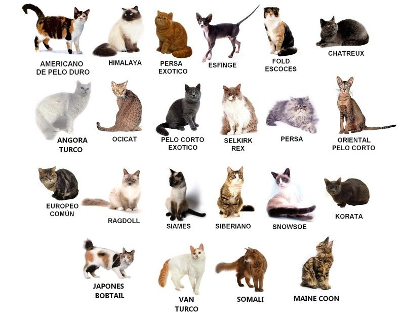

Tambien llamados michis o mininos
Los gatos provienen de la familia felidae (Felinos) y son una subespecie domesticada por la convivencia con el ser humano del gato montes. Como resultado de mutaciones genéticas, cruzamiento y selección artificial, hay numerosas razas. Algunas, como la raza sphynx o la peterbald están desprovistas de pelo; otras carecen de cola, como los gatos de la raza bobtail o la manx, y algunas tienen coloraciones atípicas
